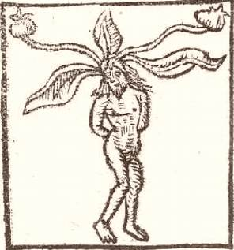

Thursday, December the 22nd, 2011
back to: title, date or indexes
Today's Hooting Yard Advent Calendar picture is of a homunculus, specifically the mandrake-root homunculus.

There is a legend that when the mandrake-person is pulled from the ground, it shrieks in pain, and this cry is able to madden, deafen or even kill an unprotected human being. One way of pulling a mandrake out of the ground safely is given as follows: “A furrow must be dug around the root until its lower part is exposed, then a dog is tied to it, after which the person tying the dog must get away. The dog then endeavours to follow him, and so easily pulls up the root, but dies suddenly instead of his master. After this the root can be handled without fear.”